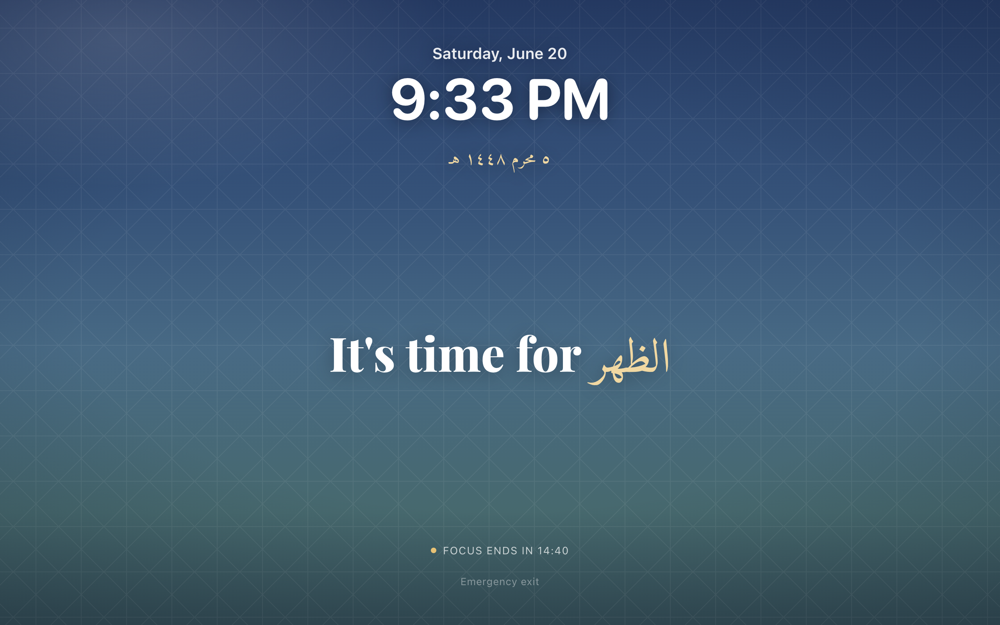
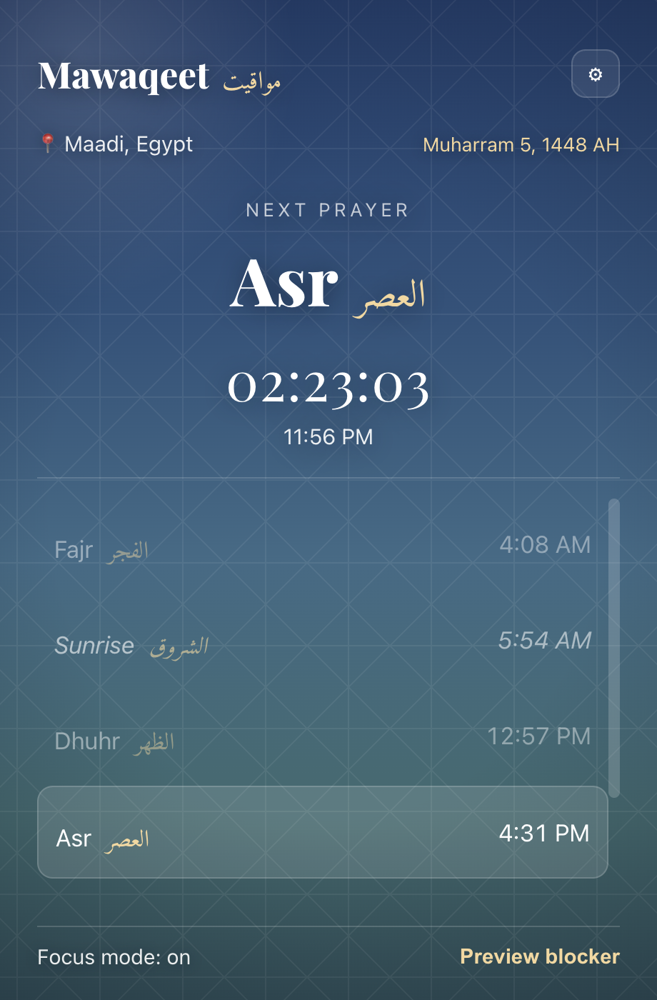
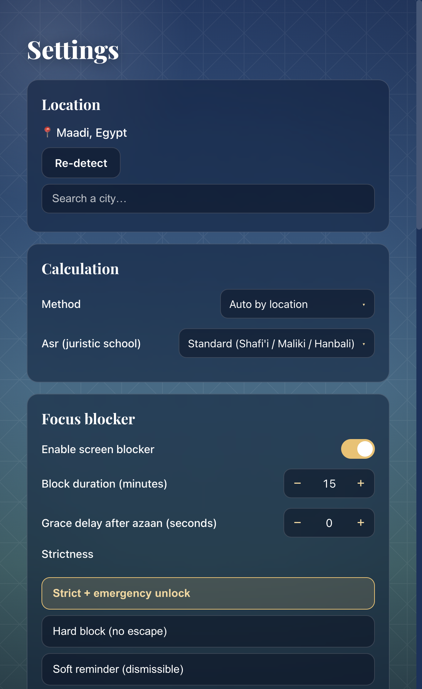

Accurate to your spot
Auto-detects your city and uses the standard authority for that place — Shafi'i or Hanafi Asr.
Mawaqeet sounds the azaan, then quietly takes over your screen — so when it's time to pray, you stand up and pray. Not "in five minutes."

Accurate prayer times for exactly where you are, with a live countdown to the next prayer right in your menu bar. Pick your calculation method and Asr school — or let it choose for your location.

Choose which prayers block your screen and for how long. Strict, hard, or soft. Add interviews and recurring meetings that shouldn't be interrupted — Mawaqeet waits, then blocks the moment they end.

Auto-detects your city and uses the standard authority for that place — Shafi'i or Hanafi Asr.
At the azaan, every screen becomes a calm reminder for a set time. Strict, hard, or soft.
In an interview or recurring meeting? It pauses, then blocks the instant the event ends.
Authentic Uthmani script with Sahih International, surah name & Juz', in Amiri Quran.
A deliberate, logged passphrase exit for genuine emergencies — easy enough, hard enough.
Covers all your monitors at once — plug in a second display mid-prayer and it's covered too.
“[Are] men whom neither commerce nor sale distracts from the remembrance of Allah and performance of prayer and giving of zakah. They fear a Day in which the hearts and eyes will [fearfully] turn about —”
Qur'an · An-Nūr 24:37 · Juz 18
Set your location once.
Pick which prayers block, and for how long.
Add any meetings that shouldn't be interrupted.
macOS (Universal — Apple Silicon & Intel), Windows and Linux are available now. iPhone, iPad and Android are planned. The hard screen-blocker is a desktop capability.
In Strict mode, click Emergency exit, hold the button, then type the passphrase. A built-in backup, mawaqeet, always works — and you can set your own in Settings (either one unlocks). Every use is logged. Soft mode is dismissible anytime; Hard mode has no escape until the timer ends.
Yes — the blocker covers every display at once (including a monitor you plug in mid-prayer), and the emergency exit / dismiss clears all screens together.
Yes — free to download and use. Optional paid extras may come later, but the core stays free.
Apple doesn't allow an app to lock the screen over others on iOS/iPadOS, so on mobile you'll get full-screen reminders and notifications instead.
Free, forever at the core.